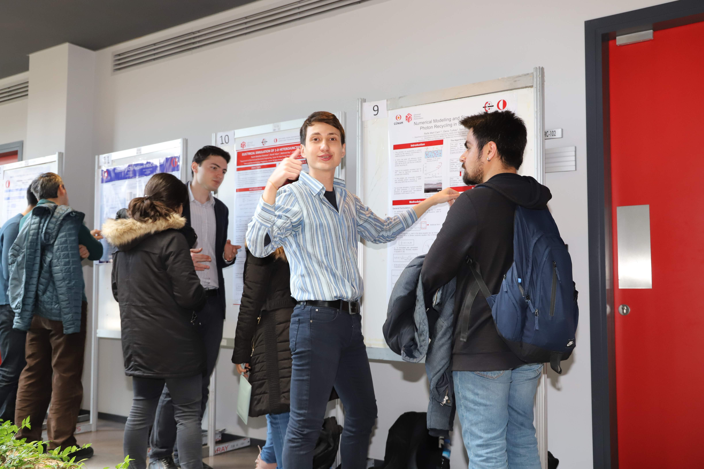
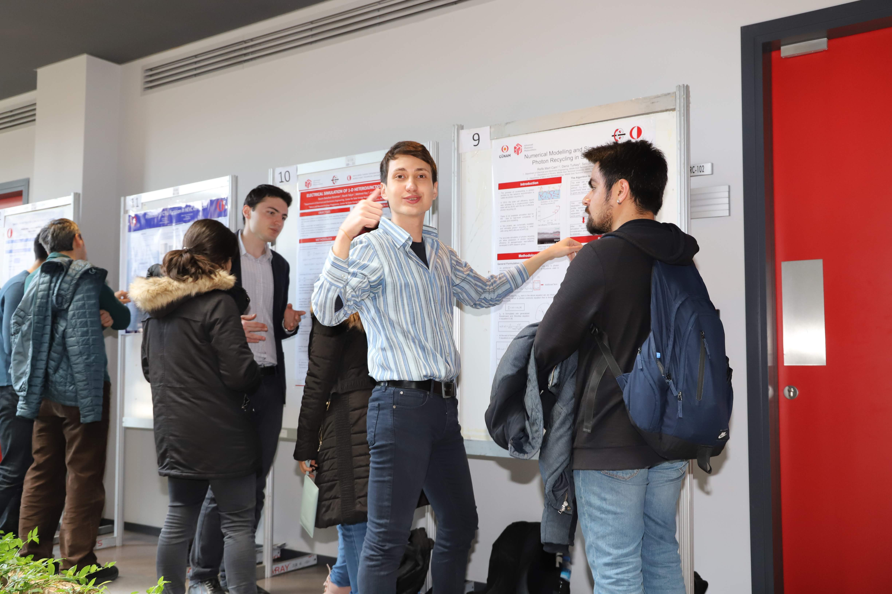
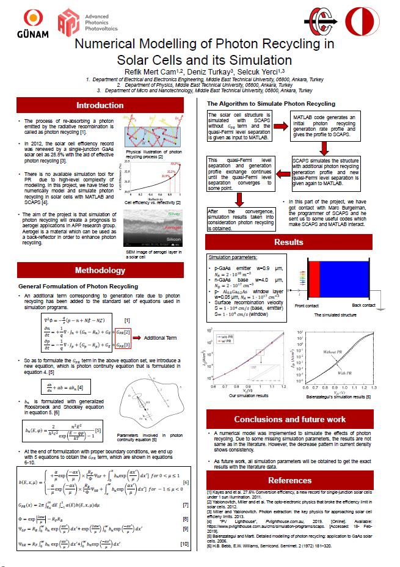
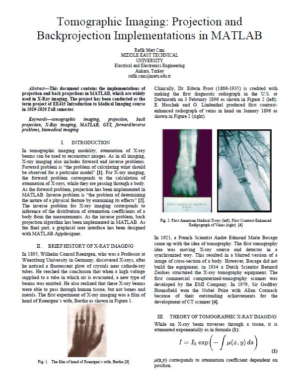

.jpg) 

Hasan Yasar
Technical Director, Adjunct Faculty Member Continuous Deployment of Capability Software Engineering Institute | Carnegie Mellon University
Carnegie Mellon University Software Engineering Institute Pittsburgh, PA, USA
phone:412 268 9219 e-mail: hyasar@cmu.edu
Middle East Technical University, Department of Electrical and Electronics Engineering, Ankara, Turkey
phone: +90 312 210 2301 e-mail: gulbin@metu.edu.tr
Middle East Technical University, Department of Electrical and Electronics Engineering, Ankara, Turkey
phone:+90 312 210 2342 e-mail: figeno@metu.edu.tr
Middle East Technical University, Department of Electrical and Electronics Engineering, Ankara, Turkey
phone:+90 312 210 2344 e-mail: syerci@metu.edu.tr

I have tried to numerically model and simulate Photon Recycling in solar cells.Furthermore, I have won the People’s Choice Award in the poster presentation competition of undergraduate research program STAR conducted by the METU EEE department.

In this project,I have implemented Projection and Back-projection algorithms for tomographic imaging and designed a GUI with MATLAB Appdesigner.